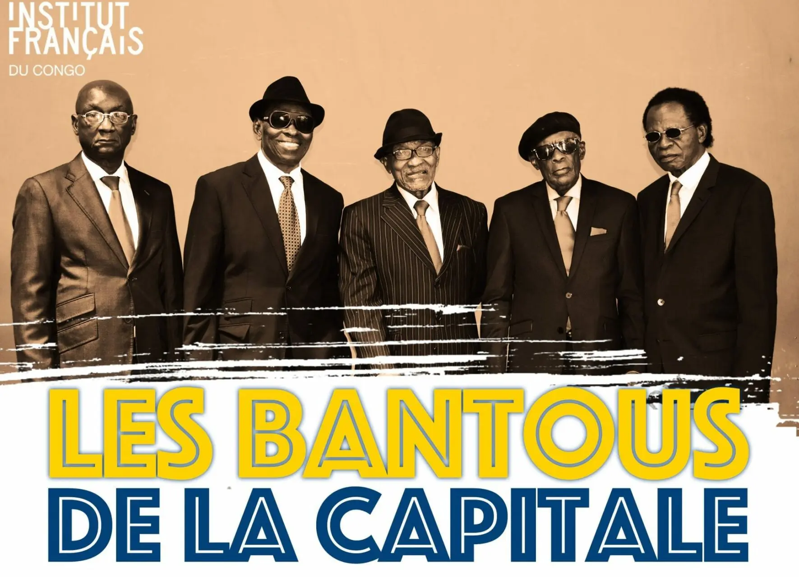
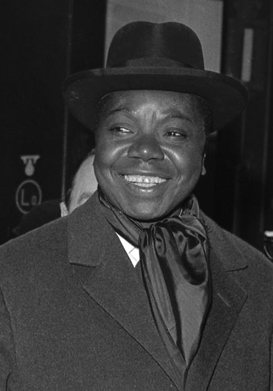
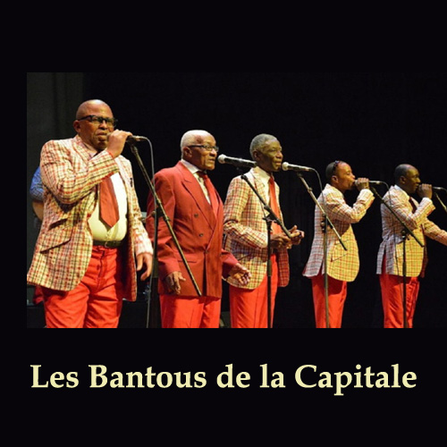
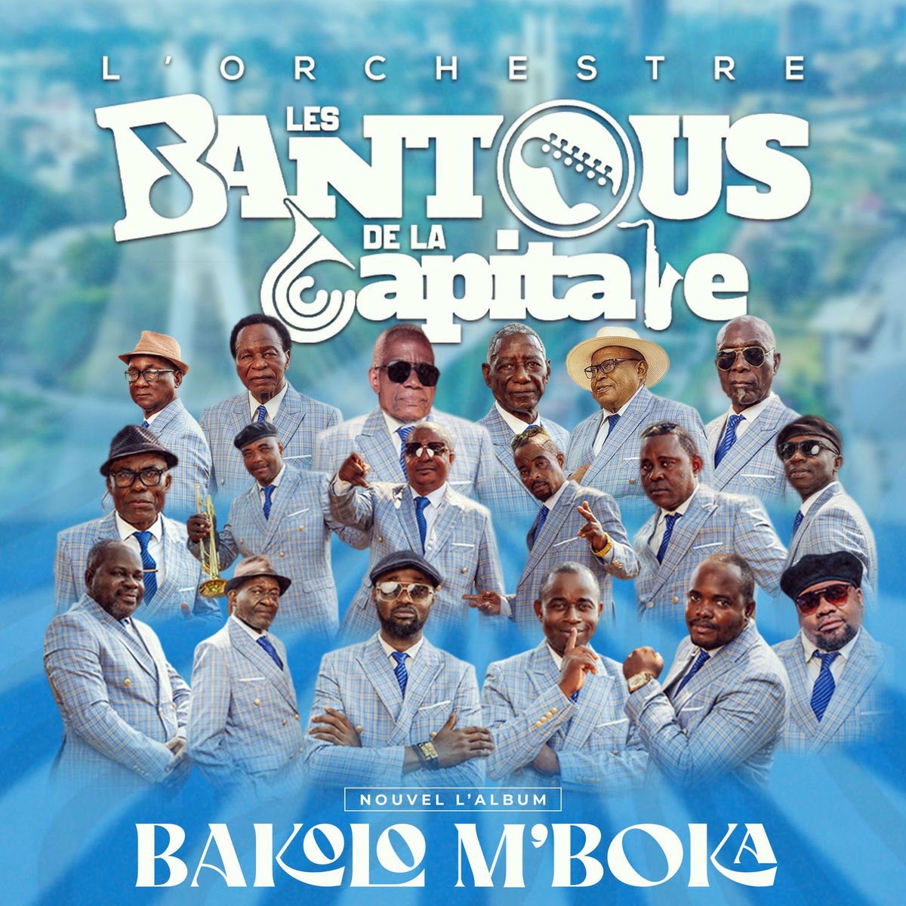

Créé le 15 août 1959 par d’anciens musiciens de l’OK Jazz au dancing-bar Chez Faignond à Brazzaville au Congo, l’orchestre est alors soutenu financièrement et matériellement par le gérant Emile Faignond. Les Bantous de la Capitale (appelés aussi Bantous Jazz) sont alors composés de grands auteurs, compositeurs, instrumentistes et interprètes comme Edouard « Edo » Nganga et Célestin « Célio » Kouka (voix), Dicky Baroza (guitare solo), Dignos Dingari (guitare rythmique), Daniel Lubelo « De La Lune » (basse, voix), Jean-Serge Essous (clarinette, sax, flûte, voix), Dieudonné Nino Malapet (saxophone) et Saturnin Pandi (tumba)…
Quant à l’origine du nom « Les Bantous de la Capitale », deux versions subsistent : la première attribue la paternité à Etienne Bakana, qui lors de la discussion autour du nom du nouvel orchestre, laissa échapper « Betu Bantous » qui veut dire « nous-aussi nous sommes des hommes » ; tandis que l’autre version dit qu’il est l’émanation de Bantou Sextet de Dieudonné Dadet Zongbe.
Le succès rapide de ce groupe s’explique en partie par le soutien de l’amicale créée par Idriss Diallo, Pierre Labague, Yvonne Tchicaya Vonvon, Makabala, Etienne Bakana, Mandola et Denis Kinamy. Bientôt, ils sortent sous le label Ndombe, leur premier tube, Wa BB, suivi de Una noche, Luiza, Nazonga na motema et Quiere me. Fort de leur succès, le groupe tourne bientôt en Afrique de l’Ouest (Togo, Dahomey (actuel Bénin), Ghana, Côte d’Ivoire). A son retour, le groupe devient une véritable pépinière et accueille le guitariste et chanteur Papa Noël . Deux ans après une nouvelle tournée en Afrique de l’Ouest en 1960 (Côte d’Ivoire, Sénégal, Gambie, Liberia), l’orchestre est rejoint par Francis Bitshoumouna alias « Céli Bitshou » mais voit le départ d’Edo Nganga et De la lune pour l’Ok Jazz. En 1963, de nouveaux musiciens réjoignent la formation : Passi Mermans, Michel Samba Miguel, Joseph Samba « Mascott » et Michel Boyibanda, suivis d’Yvon Bemba Pamelo dit « Pablito » et de Joseph Mulamba « Mujos« . Leur arrivée coïncide avec la sortie de la première chanson de Pamelo Mounk’A (Nakolanda bango).

Après une tournée régionale (Cameroun, Tchad, R. Centrafrique) en 1964, Edo Nganga, expulsé du Zaïre comme tous les Congolais de Brazzaville par Moïse Tshombe (1919-1969), alors premier ministre, rejoint le groupe. L’année suivante, Les Bantous de la Capitale accueillent un jeune chanteur, Côme Moutouari Kosmos, célèbre pour son tube Ebandeli ya mosala. La formation compte alors de nombreux talents qui contribuent à la reconnaissance de la scène brazzavilloise longtemps restée dans l’ombre de la grande soeur Kinoise (Congo Kinshasa). Les Bantous participent ainsi à plusieurs manifestations comme le Festival Mondial des Arts Nègres en 1966 à Dakar (Sénégal), le 6ème anniversaire de l’indépendance de la Côte d’Ivoire acquise le 7 août 1860 et le Festival Panafricain d’Alger en 1969. Cette période voit Jean-Serge Essous quitter le groupe pour rejoindre Paris (France)…
L’année 1972 voit la défection de plusieurs musiciens : Passi Mermans, Pamelo Mounk’A, Edo Nganga, Théo Blaise, Célestin Kouka et Kosmos. Mais l’orchestre enregistre le retour de deux anciens membres fondateurs qui assurent la direction artistique, Nino Malapet et Jean-Serge Essous. Suit une nouvelle vague de talents qui redonnent un nouveau souffle au groupe en cette année en 1972: Lambert Kabako, José Missamou, Pambou Tchikaya, Roger Pikou, Antonio Mawana Braz, Simon Mangouani, Gerry, Johnny Kiolo, Jean Ngoumba, Samba Mascott, Kabongo Wetu, Rikky Siméon, Pandi ou encore Gérard Biyela, auteur, compositeur du fameux Sakie.
Sous la férule de Nino Malapet, Les Bantous de la Capitale se rendent fin 1974 à Cuba, terre d’adoption de la rumba, puis à Luanda à l’occasion de l’indépendance de l’Angola. En 1975, Lambert Kabako (il sera bientôt de retour), Antoine Mawana « Brazz », Ferdinand Kiolo et Arthur Nona Samba quittent l’orchestre qui participent, en 1977, au Festival de Lagos au Nigeria. A leur retour, Kabako Lambert, Johnny Kiolo, Michel Boyibanda, Passi Mermans et Jean Saïdou décident de les réintégrer, suivis, deux ans plus tard, de Pamelo Mounk’A et d’Edo Nganga. De nombreux mouvements qui affaiblissent la renommée de la formation.

Il faut attendre 1986 et le soutien matériel de l’ancien maire de Brazzaville, Jean Jules Okabando, pour une renaissance de la formation. Quatre ans plus tard, Célestin Kouka, Bemba Pamelo, Touloulou Alphonse, Samba Mascott, José Missamou et Biyela Gérard montent une formation dissidente, Bantous Monument. Les Bantous de la Capitale engagent alors Jean Michel Miekoutima Ketchel, François Sam Liworo, Elenga Ellington, Paul Mayitezo, Makirimba, Lokoko et Poaty.
Ce groupe emblématique qui a composé de nombreux classiques de la rumba congolaise fête ses 50 ans de carrière en France, au festival d’Angoulême et à l’Olympia à Paris. Une vraie consécration. A cette occasion, « Bantous de la Capitale – 50 ans », un DVD comprenant leur concert enregistré en live et des interviews a été réalisé sur les papys co-fondateurs de l’orchestre (Jean-Serge Essous (décédé la même année)), Nino Malapet, Pandi Saturnin (percussions), Edo Nganga (voix), Célestin « Célio » Kouka (voix) ou encore Daniel Loubelo « De La Lune »(basse)…
Pépinière de talents, Les Bantous de la Capitale ont accueilli de nombreux artistes à des périodes différentes : Papa Noël Nedule (guitare), Saturnin Pandi (percussion), Francis Bitshoumanou (basse), Alphonse Taloulou (basse), Joseph « José » Missamou, Tchico Tchicaya, Théo Blaise Kounkou, Lambert Kabako et Théo Bitsikou (voix), Joseph « Jojo » Bukassa (voix), Dicky Baroza (guitare), Gerry Gérard aka Gérard Biyela (guitare), Damiens (maracas), Henri Wateto (percussions), Jean Dinos (guitare), Côme « Kosmos » Moutouari (voix), Joseph « Mujos » Mulamba (voix), André Aribot (batterie), Dele Pedro (saxophone), Pamelo Mounk’a aka Pablito (voix), Samba Mascott (guitare), Passy Mermans (guitare)…

* Sources : Herman Bangi Bayo (AEM) et Clément Onissonde.